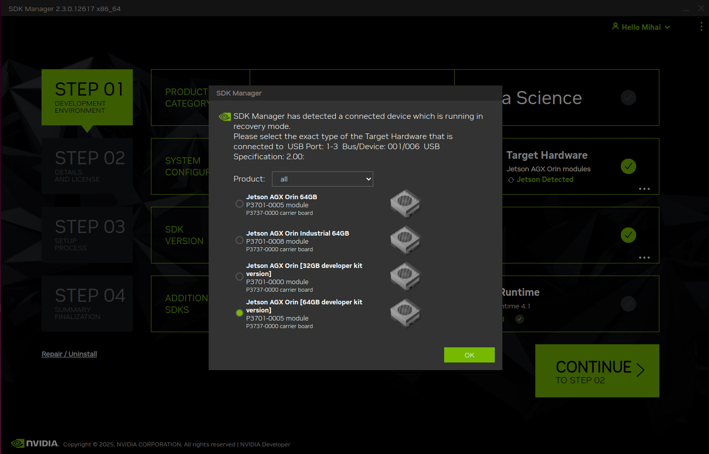
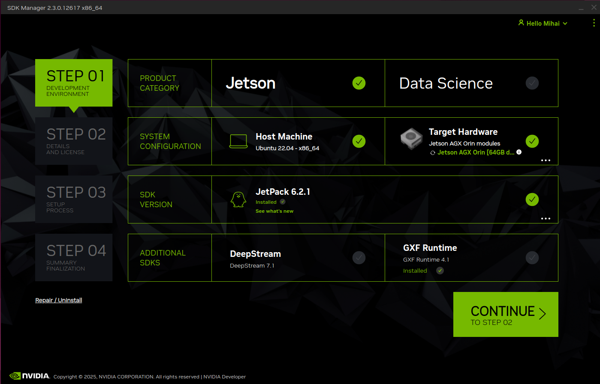
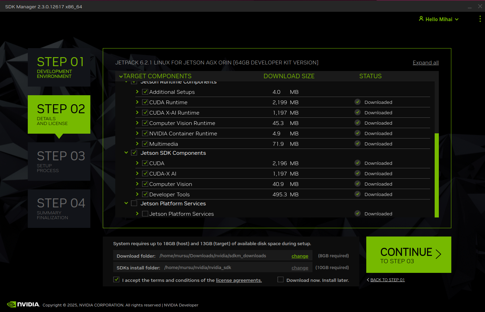
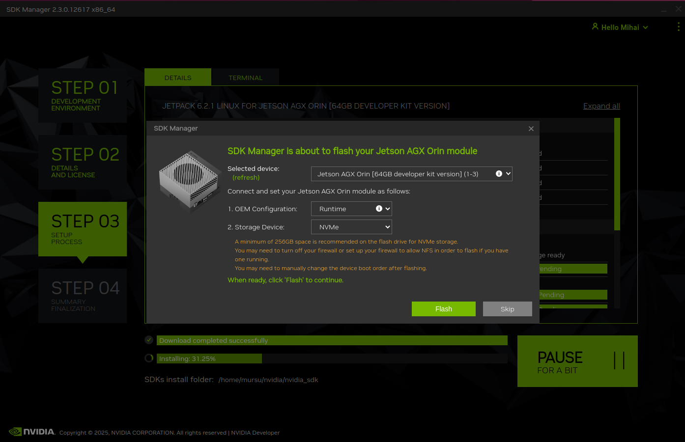
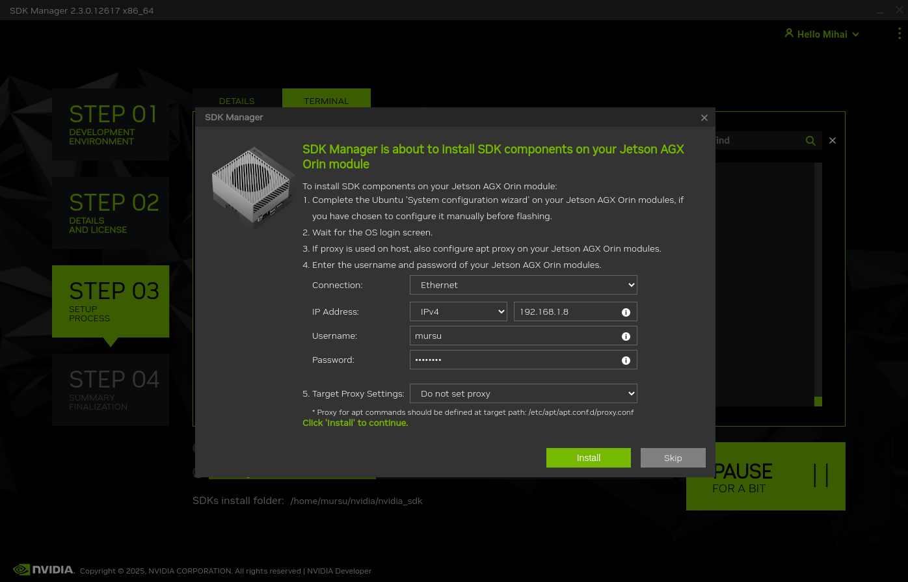
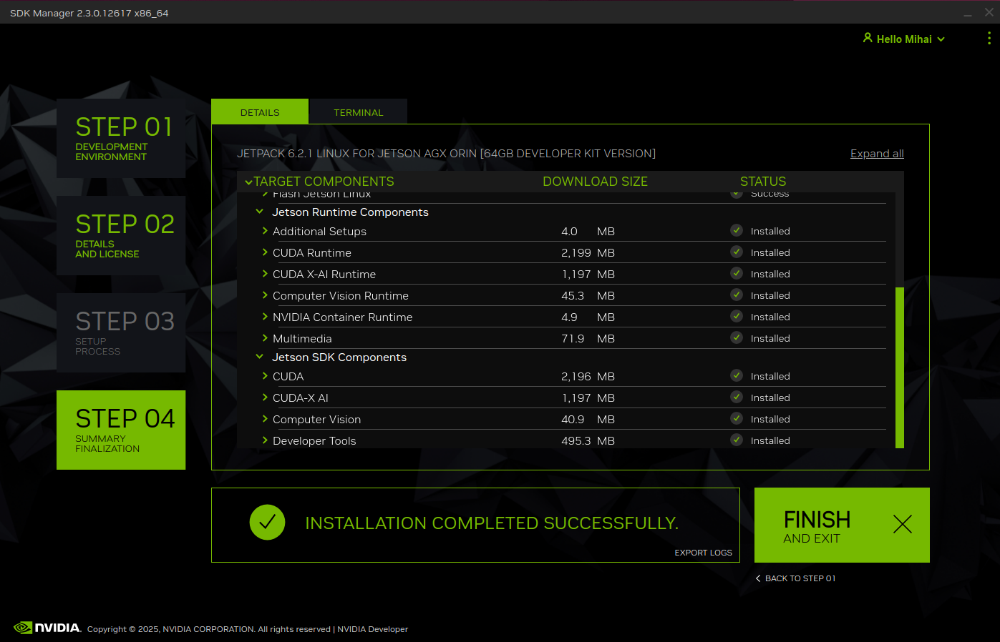
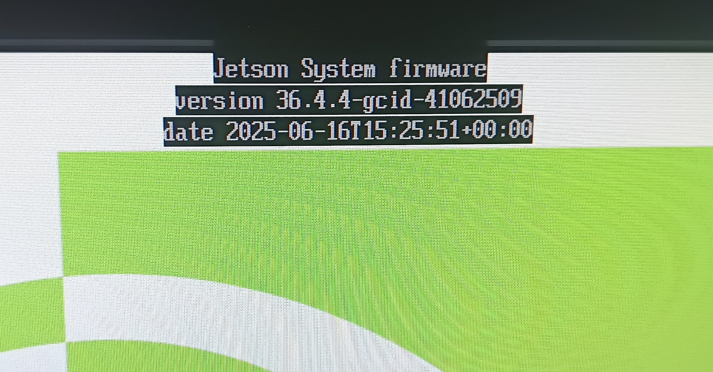
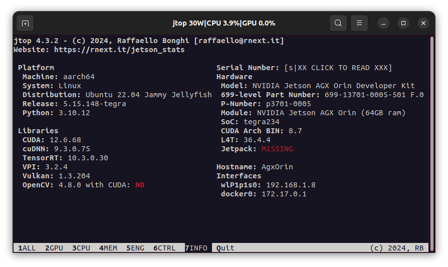

1) Linux installation on Jetson AGX Orin
- This section describes the required steps for having a bootable device, with latest L4T and required toolkits. The Jetson AGX Orin DevKit supports the following three types of mass storage:
NVMe (fastest access)
onboard 64GB eMMC
uSDHC (slowest access)
The following steps imply the usage of a NVMe as install target and bootable mass storage.
Tip
It is highly advised to have two identical NVMes if you intent to use the backup-restore tools from Nvidia.
1.1) Linux host preparation
Table below contains the requirements for the notebook or desktop computer.
Component |
Version |
Remarks |
|---|---|---|
OS |
Ubuntu 22.04 LTS |
X86_64 |
Nvidia SDK Manager |
> 2.3.0 |
Should Support JetPack 6.2.1 |
1.2) Jetson AGX Orin DevKit preparation
Remove the power supply and disconnect all cables from the device.
If a uSDHC is inserted, it can be now removed.
Carefully install the NVMe where L4T should be installed. All content from this mass storage will be deleted.
Install a USB-C to USB-C cable between the connector near the 40-pin header, and the host computer.
Connect the monitor, keyboard, and mouse.
Connect the power supply.
1.3) Installation procedure with Nvidia SDK Manager
- On AGX Orin:
start the device in Forced Recovery mode
- On the Linux host:
Launch Nvidia SDK Manager
based on what devices are detected in forced recovery mode, the following list is displayed:

select Jetson AGX Orin [64GB developer kit version]
- before continuing to STEP 02, make sure selections are like in the screenshot below
Product Category: Jetson
SDK Version: JetPack 6.2.1

on STEP 02, select all checkboxes in all tree controls except Jetson Platform Services

continue to STEP 03 and wait until the target flash options are displayed

- Select the following:
OEM Configuration: Runtime
Storage Device: NVMe
click on Flash
- On AGX Orin:
watch the display connected and, when prompted, select a user, password, Wi-Fi network, and agree to install Chromium web browser
the device may reboot at least one time to complete the setup
DO NOT use apt commands and DO NOT install anything at this step
open a terminal and run ifconfig - note down the IP address (e.g. 192.168.1.8)
- On the Linux host:
- when prompted, enter the AGX Orin
connection type
IP address
credentials

click on Install
depending on the network speed, STEP 03 may take up to a couple of hours
wait until the setup completes

click on FINISH AND EXIT
disconnect the USB cable between the host computer and the AGX Orin
upcoming steps are targeting the Jetson AGX Orin only
{kind=link}
{kind=link}
{kind=link}
{kind=link}
{kind=link}
{kind=link}
1.4) Jetson AGX Orin Setup
Rebot the device from terminal:
sudo reboot
Jetson L4T and bootloader version
Tip
Depending on the existing bootloader version, an update may take place and a progress bar will be visible for several seconds.
The Jetson L4T version (36.4.4) and the timestamp (2025-06-16) of the new bootloader are visible on the first screen displayed after powerup/restart.
{kind=link}

dpkg --list | grep nvidia-l4t-bootloader
Listed version should be:
ii nvidia-l4t-bootloader 36.4.4-20250616085344 arm64 NVIDIA Bootloader Package
The Jetson L4T (36.4.4) and timestamp (20250616) correspond to the one displayed on the bootup screen.
Update and upgrade
sudo apt update
sudo apt upgrade
sudo apt dist-upgrade
sudo apt install nvidia-jetpack
Nvidia Prerequisites
Check the installed CUDA version
dpkg --list | grep cuda-nvcc
Listed version should be:
ii cuda-nvcc-12-6 12.6.68-1 arm64 CUDA nvcc
Install jtop
sudo apt install python3-pip
sudo pip3 install jetson-stats
Reboot the device to activate changes. Run jtop in a terminal. It should look like:
{kind=link}

snapd version fix
Warning
The update of snap to v2.70 has broken the functionality of web browsers, such as Chromium.
Use the following commands only if the installed Chromium cannot start on the AGX Orin. They will install snap v2.68.5 and put a hold on it.
snap download snapd --revision=24724
sudo snap ack snapd_24724.assert
sudo snap install snapd_24724.snap
sudo snap refresh --hold snapd
Check the versions:
snap --version
The output should be:
snap 2.68.5
snapd 2.68.5
series 16
ubuntu 22.04
kernel 5.15.148-tegra